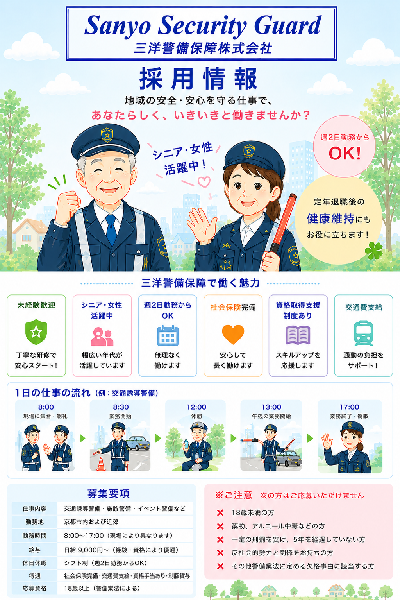

採用情報
地域の安心・安全を守る仲間を募集しています。

募集職種
| 募集職種 | 警備スタッフ |
|---|---|
| 仕事内容 | 交通誘導警備・施設警備・雑踏警備・イベント警備 |
| 勤務地 | 京都市内および近郊 |
| 雇用形態 | 正社員・契約社員・アルバイト |
| 給与 | 当社規定による（経験・資格を考慮） |
| 勤務時間 | 現場により異なります |
| 資格 | 18歳以上（警備業法による） |
こんな方を歓迎します
- 未経験から警備の仕事を始めたい方
- 人と接することが好きな方
- 地域社会に貢献したい方
- 資格取得を目指したい方
- シニア世代も歓迎します
1日の仕事の流れ（例）
08:00 現場集合・朝礼
08:30 警備開始
12:00 昼休憩
13:00 午後勤務開始
17:00 業務終了・報告・解散
福利厚生・研修制度
- 各種社会保険完備（加入条件による）
- 交通費支給（会社規定）
- 制服貸与
- 資格取得支援制度
- 法定研修・現場研修あり
- 経験者優遇・未経験者歓迎
警備本部事務所
〒612-8401
京都市伏見区深草下川原町55番地
採用面接・座学研修などは、主に警備本部事務所で行います。
交通アクセス
● 京都市営地下鉄烏丸線「くいな橋駅」より徒歩約10分
● 近鉄京都線「竹田駅」より徒歩約17分
● 名神高速道路 京都南ICより車で約8分
● お車でお越しの際は事前にご連絡ください。
採用担当より
未経験の方でも安心して働けるよう、 法定研修や現場研修を丁寧に行っています。 経験よりも、人柄・責任感・挨拶を大切にしています。 地域の安心と安全を守る仕事に、 あなたも挑戦してみませんか。